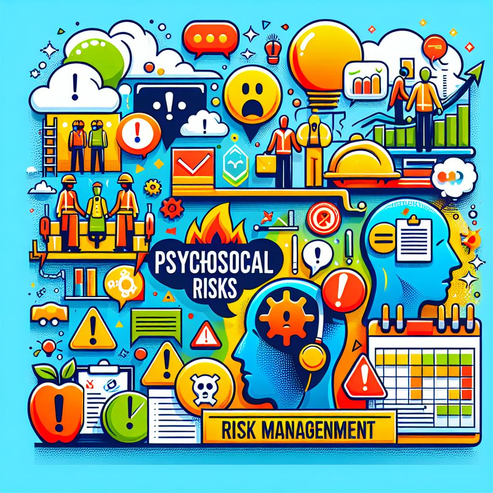

.png)
Alterações na NR 1 incluem riscos psicossociais no Programa de Gerenciamento de Riscos (PGR)
Publicado em 27/03/2025
| Por Aline Moreira
As recentes alterações na Norma Regulamentadora nº 1 (NR 1) trouxeram um marco significativo para a gestão de segurança e saúde no trabalho no Brasil, com a inclusão dos riscos psicossociais no Programa de Gerenciamento de Riscos (PGR). Essa mudança, que entra em vigor em maio de 2025, reflete a crescente preocupação com a saúde mental dos trabalhadores e a necessidade de ambientes laborais mais saudáveis e seguros.

O que são riscos psicossociais?
Os riscos psicossociais estão relacionados a fatores organizacionais e interpessoais no ambiente de
trabalho que podem impactar negativamente a saúde mental e emocional dos trabalhadores. Exemplos
incluem:
- Excesso de situações de estresse
- Situações de sobrecarga de trabalho mental
- Exigência de alto nível de concentração, atenção e memória
- Trabalho em condições de difícil comunicação
- Excesso de conflitos hierárquicos no trabalho
- Excesso de demandas emocionais/afetivas no trabalho
- Assédio de qualquer natureza no trabalho
- Trabalho com demandas divergentes (ordens divergentes, metas incompatíveis entre si, exigência de
qualidade X quantidade, entre outras)
- Exigência de realização de múltiplas tarefas, com alta demanda cognitiva
- Insatisfação no trabalho
- Falta de autonomia no trabalho
- Outros
Esses fatores podem levar a problemas como estresse, ansiedade, depressão e até mesmo ao
afastamento do trabalho.
Principais mudanças na NR 1
A atualização da NR 1 exige que as empresas:
- Identifiquem e avaliem os riscos psicossociais em seus ambientes de trabalho.
- Elaborem planos de ação para mitigar esses riscos, incluindo medidas preventivas e corretivas.
- Monitorem continuamente a eficácia das ações implementadas.
- Documentem os processos de gestão de riscos para fins de fiscalização.
Além disso, a norma destaca a importância de um ambiente de trabalho que promova a saúde mental,
prevenindo situações de sobrecarga e ambientes tóxicos.
Impactos para as empresas
A inclusão dos riscos psicossociais no PGR representa um desafio e uma oportunidade para as
empresas. Por um lado, exige adaptações nos processos de gestão e treinamento de equipes. Por outro,
reforça a responsabilidade social corporativa e pode resultar em maior produtividade e retenção de
talentos.
Quais são as melhores práticas para gerenciar riscos psicossociais?
Gerenciar riscos psicossociais de forma eficaz requer uma abordagem estratégica e integrada, que
priorize o bem-estar dos trabalhadores e crie um ambiente de trabalho saudável. Aqui estão algumas
das melhores práticas para lidar com esses riscos:
1. Identificação e Avaliação dos Riscos
- Realizar diagnósticos regulares por meio de questionários, entrevistas e observações para
identificar fatores estressores no ambiente de trabalho.
- Envolver os trabalhadores no processo de identificação, garantindo que suas perspectivas sejam
consideradas.
2. Promoção de um Ambiente Saudável
- Incentivar a comunicação aberta e respeitosa entre colaboradores e lideranças.
- Criar uma cultura organizacional que valorize o equilíbrio entre vida pessoal e
profissional.
3. Treinamento e Capacitação
- Oferecer treinamentos específicos para líderes e funcionários sobre como identificar, lidar e
prevenir situações de risco psicossocial.
- Sensibilizar sobre os sinais de esgotamento, estresse ou outras condições relacionadas à saúde
mental.
4. Estabelecimento de Políticas e Recursos
- Criar políticas claras para abordar questões como assédio, metas abusivas e jornadas extensas.
- Disponibilizar canais de suporte, como psicólogos ocupacionais ou programas de assistência ao
empregado.
5. Intervenções Preventivas
- Implementar pausas regulares e práticas de relaxamento no dia a dia.
- Promover atividades que estimulem a interação social, cooperação e empatia entre os
trabalhadores.
6. Monitoramento e Melhoria Contínua
- Avaliar regularmente a eficácia das medidas implementadas e ajustá-las conforme necessário.
- Solicitar feedback dos trabalhadores para identificar pontos de melhoria.
7. Envolvimento da Liderança
- Garantir que os líderes sirvam de exemplo, promovendo comportamentos saudáveis e apoiando os
trabalhadores.
- Estabelecer liderança participativa para criar um ambiente de confiança.
Essas práticas podem ajudar a reduzir significativamente os impactos dos riscos psicossociais,
melhorando a satisfação, o desempenho e a saúde dos trabalhadores.
A atualização da NR 1 é um passo importante para a valorização da saúde mental no ambiente de
trabalho. Empresas que se adequarem às novas exigências não apenas estarão em conformidade com a
legislação, mas também contribuirão para um ambiente laboral mais humano e sustentável.